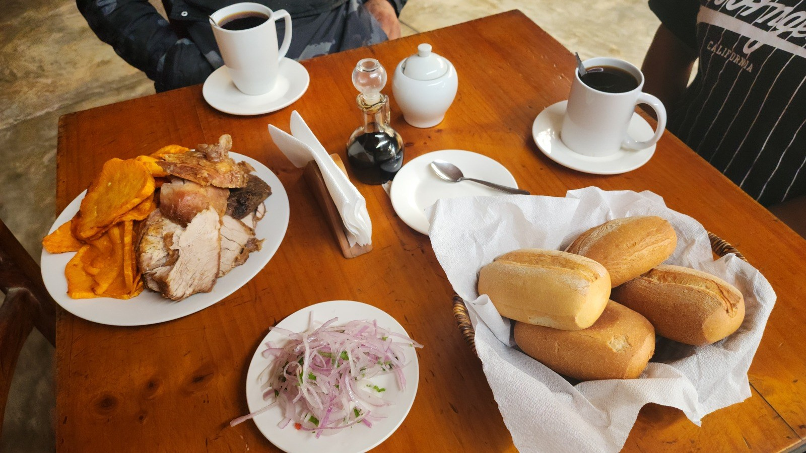

MISIÓN
Recibirte con sabor y cercanía.
Brindar una experiencia gastronómica campestre con platos tradicionales, insumos locales y frescos, y atención cercana para el descanso, la celebración y la integración familiar.
NUESTRA HISTORIA
Cocina peruana, familia y un encuentro con el valle de Huaura.

El restaurante lleva el nombre del padre de su propietaria, Luzmila Sandoval. Esa historia familiar acompaña una propuesta de cocina tradicional y hospitalidad para quienes viven en la zona y quienes recorren la ruta hacia Churín.
En nuestra mesa encontrarás desayunos, platos campestres y bebidas para compartir. Los ingredientes locales y frescos forman parte de la propuesta gastronómica descrita en nuestra historia.
«Enamorando paladares desde 2015», como dice nuestra carta.
MISIÓN
Brindar una experiencia gastronómica campestre con platos tradicionales, insumos locales y frescos, y atención cercana para el descanso, la celebración y la integración familiar.
VISIÓN
Consolidarnos como un referente gastronómico en la ruta de Sayán, reconocidos por nuestra cocina, la atención al cliente y la mejora continua de nuestros espacios.
Comedor campestre, áreas de jardín, recreación para menores y estacionamiento.
Planifica tu visita ↗